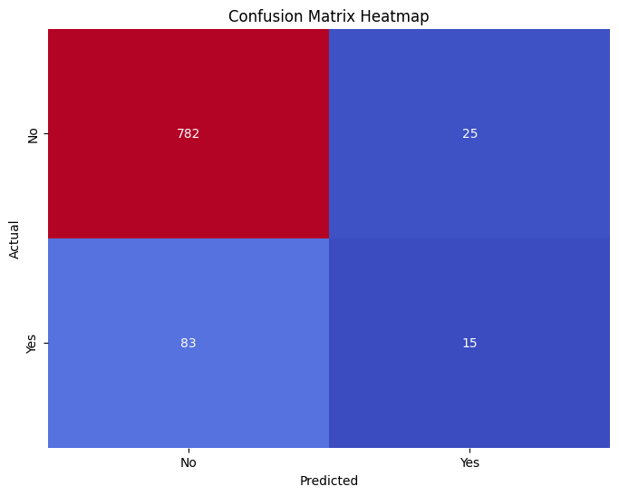

Analysis Predictive

Grafik ini menghasilkan heatmap matriks kebingungan yang menampilkan kinerja model pohon keputusan dalam mengklasifikasikan respons pelanggan terhadap kampanye pemasaran. Dalam heatmap, sumbu y merepresentasikan kelas aktual, dan sumbu x merepresentasikan kelas yang diprediksi. Setiap kotak menunjukkan jumlah pengamatan yang diklasifikasikan ke dalam kombinasi kelas aktual dan prediksi tertentu, dengan warna yang mencerminkan frekuensi pengamatan tersebut. Heatmap ini memungkinkan pengguna dashboard untuk dengan cepat mengevaluasi seberapa baik model mengklasifikasikan respons pelanggan serta mengidentifikasi area di mana kinerja model mungkin kurang optimal.